Workflows 17
Multi-surface scenes — the fastest path to a video.
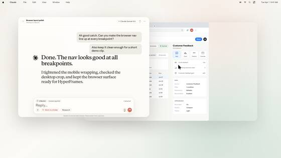
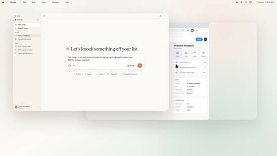
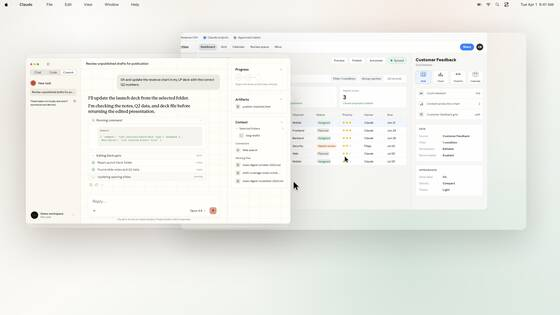
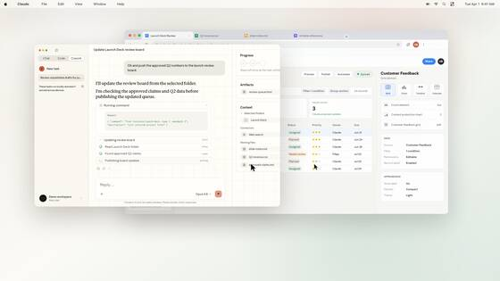
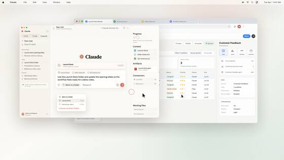
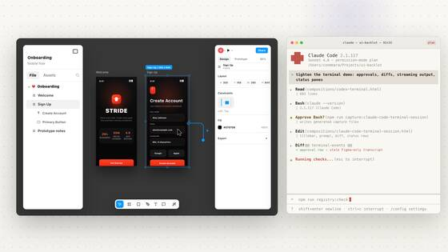
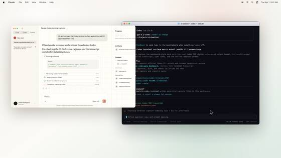
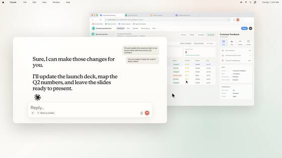
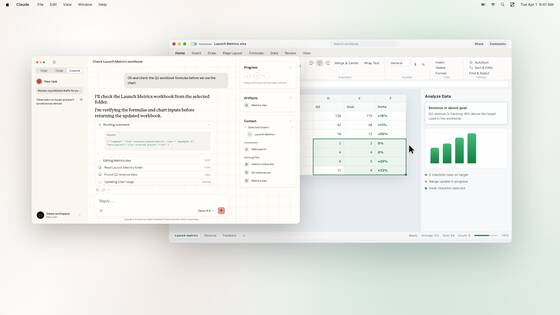
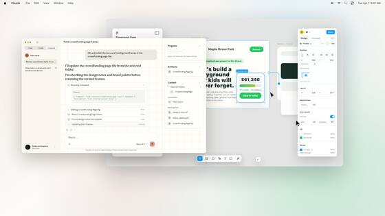
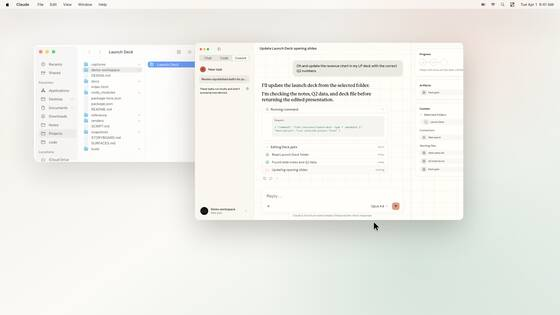
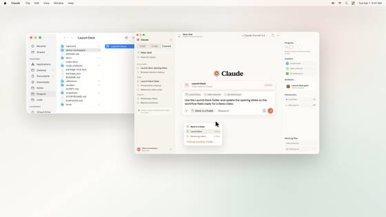
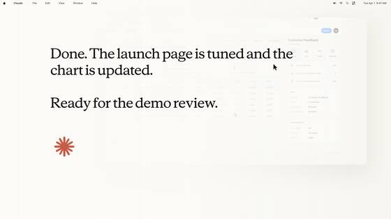
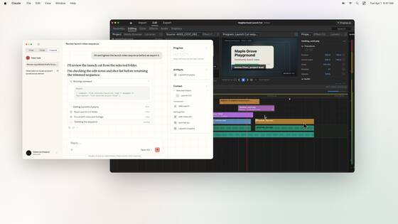
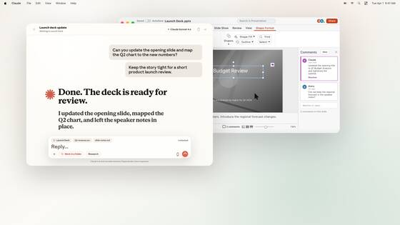
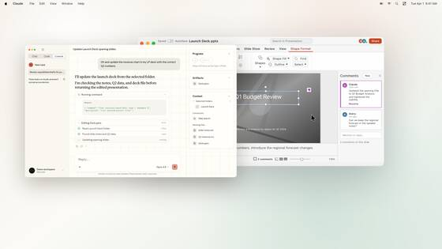
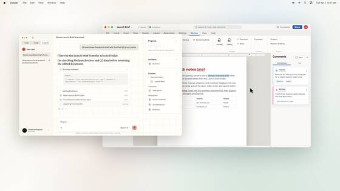
Claude & Chat 19
Assistant shells, chat panes, composers, progress rails.
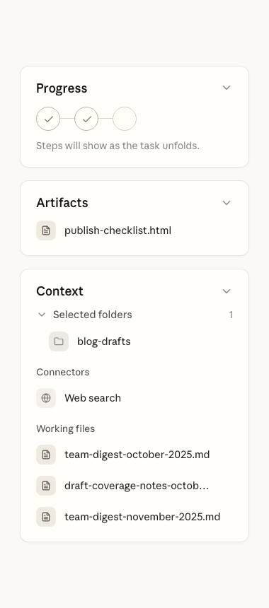
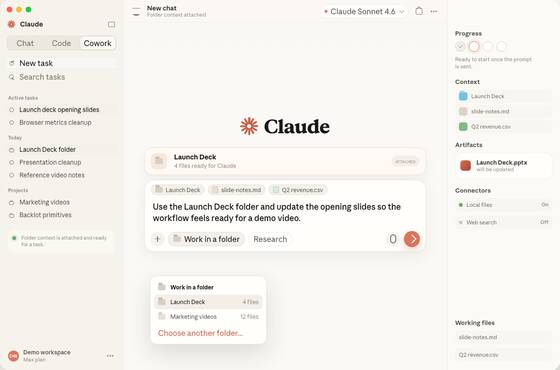
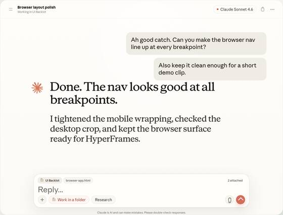
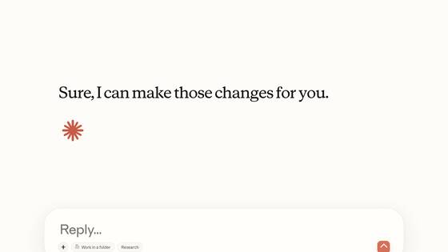
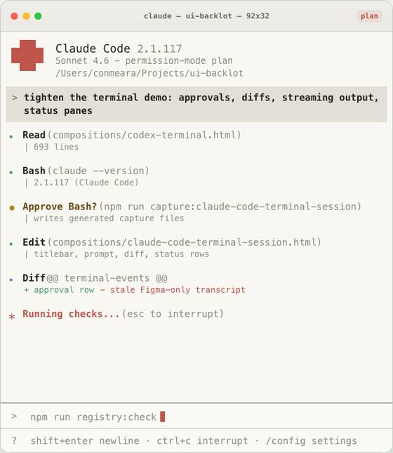
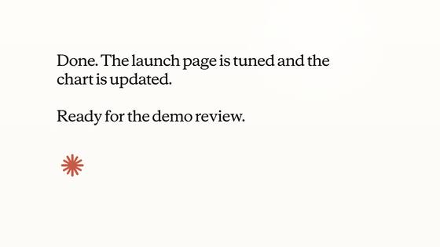
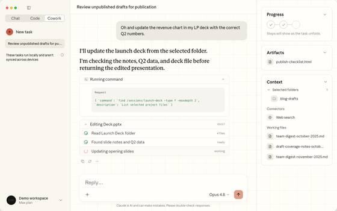
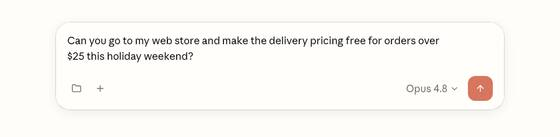
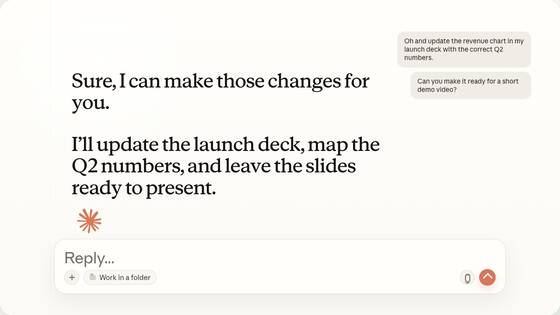
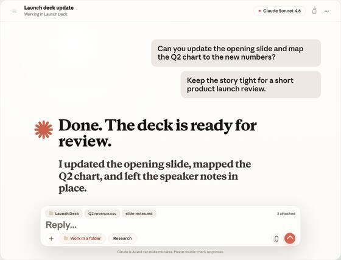
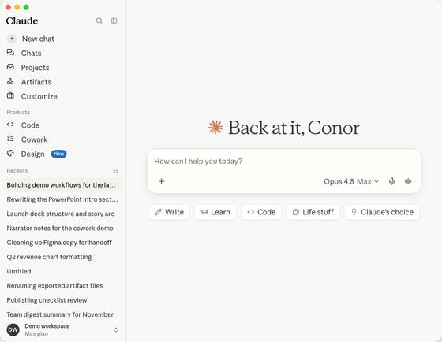
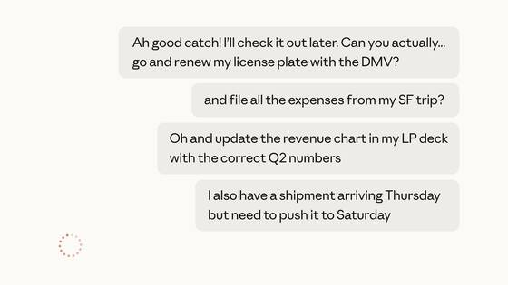
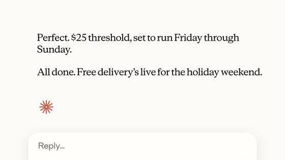
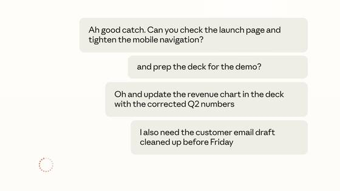
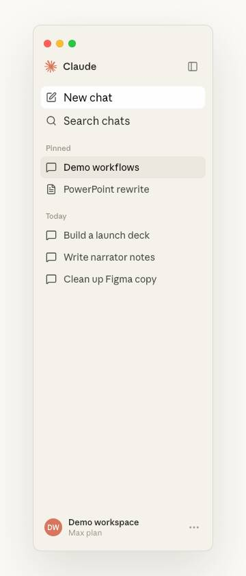
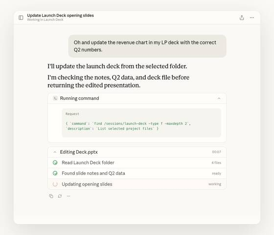
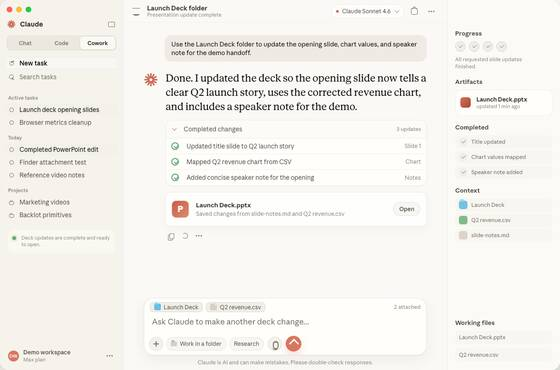
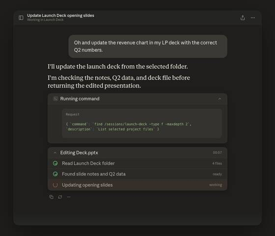
Desktop & Browser 9
macOS chrome and browser context around a demo.
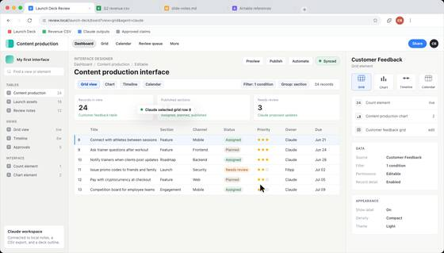
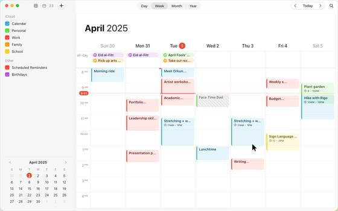
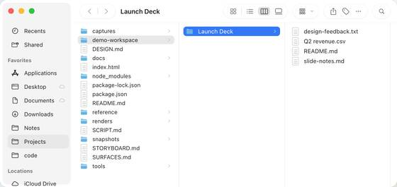
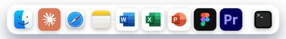
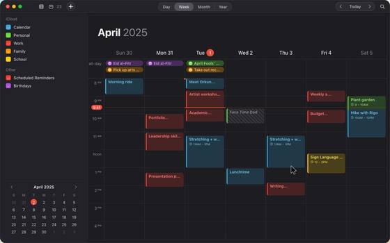
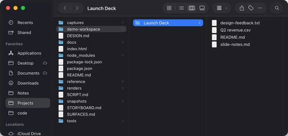
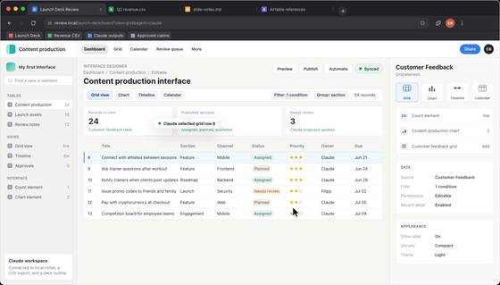
Productivity & Creative Apps 7
Office, design, and editing surfaces.
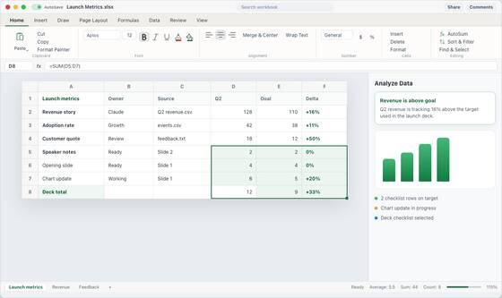
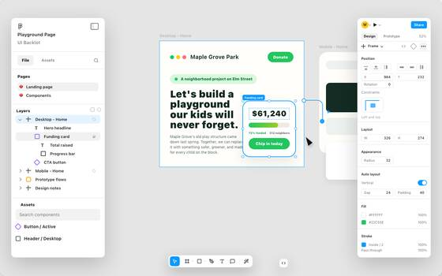
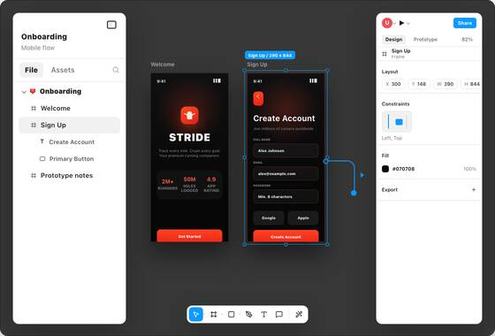
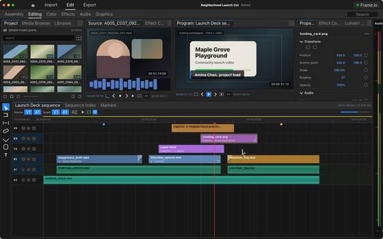
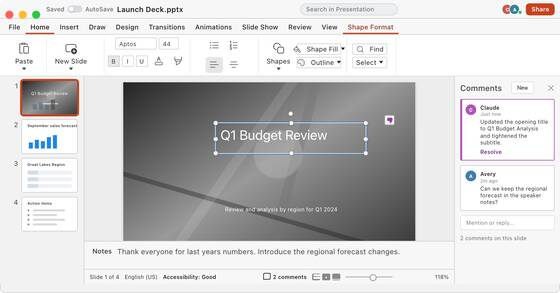
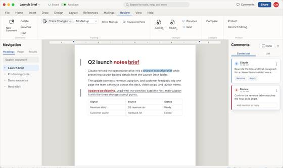
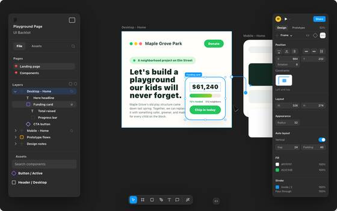
Codex & Terminal 5
Agent coding, terminal, and review surfaces.
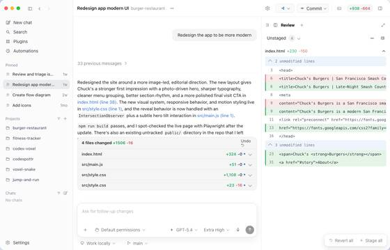
Interaction demos 10
Scripted with backlot-interactions.js — typing, cursor moves, streaming replies, rendered frame by frame. Install as starter projects: npx degit conmeara/ui-backlot/registry/examples/<name> my-video